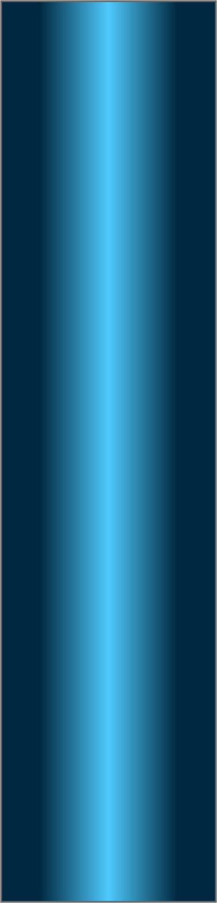
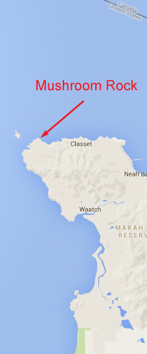
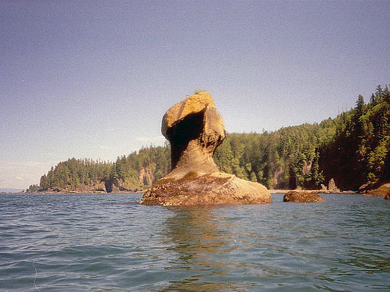

<!doctype html>
<html>
<head>
<meta charset="utf-8">
<title>Mushroom Rock</title>
<meta name="generator" content="WYSIWYG Web Builder - http://www.wysiwygwebbuilder.com">
<link href="Emerald_Diving.css" rel="stylesheet">
<link href="mushroom_frame.css" rel="stylesheet">
<script>
function onChangeGoMenu2(){var a=document.getElementById('GoMenu2-select'),b=a.options[a.selectedIndex].value,c=a.options[a.selectedIndex].className;a.selectedIndex=0;a.blur();b&&(NewWin=window.open(b,c),window.NewWin.focus())};
</script>
</head>
<body>
<script>
var gaJsHost = (("https:" == document.location.protocol) ? "https://ssl." : "http://www.");
document.write(unescape("%3Cscript src='" + gaJsHost + "google-analytics.com/ga.js' type='text/javascript'%3E%3C/script%3E"));
</script>
<script>
try {
var pageTracker = _gat._getTracker("UA-15987748-1");
pageTracker._trackPageview();
} catch(err) {}</script>

<div id="container">
<div id="wb_Shape154" style="position:absolute;left:674px;top:653px;width:375px;height:1552px;z-index:3;">
</div>
<div id="wb_MasterPage1" style="position:absolute;left:0px;top:2px;width:1049px;height:62px;z-index:4;">
<div id="wb_Shape1" style="position:absolute;left:0px;top:5px;width:1049px;height:57px;z-index:0;">
</div>
<div id="wb_Text2" style="position:absolute;left:20px;top:5px;width:185px;height:16px;z-index:1;">
<span style="color:#FFFFFF;font-family:Arial;font-size:13px;"><em><a href="./local_sites_jf.html" target="_self">Return to Western Strait Map</a></em></span></div>
<div id="wb_GoMenu2" style="position:absolute;left:800px;top:5px;width:225px;height:25px;z-index:2;">
<form id="GoMenu2" role="menu">
<select id="GoMenu2-select" name="GoMenu2" onchange="onChangeGoMenu2()">
<option class="_self" value="#" selected>Select a Dive Site</option>
<option class="_self" value="./diamond_knot_frame.html" role="menuitem">Diamond Knot</option>
<option class="_self" value="./duncan_frame.html" role="menuitem">Duncan Rock</option>
<option class="_self" value="./mushroom_frame.html" role="menuitem">Mushroom Rock</option>
<option class="_self" value="./sekiu_frame.html" role="menuitem">Sekiu Jetty Rocks</option>
<option class="_self" value="./slant_frame.html" role="menuitem">Slant Rock</option>
<option class="_self" value="./stellar_frame.html" role="menuitem">Stellar Rock</option>
<option class="_self" value="./tatoosh_canyon_frame.html" role="menuitem">Tatoosh Canyon</option>
<option class="_self" value="./third_beach_frame.html" role="menuitem">Third Beach Pinnacle</option>
<option class="_self" value="./tiger_ridge_frame.html" role="menuitem">Tiger Ridge</option>
<option class="_self" value="./waadah_island_fingers.html" role="menuitem">Waadah Island Fingers</option>
</select>
</form>
</div>
</div>
<div id="wb_Text1" style="position:absolute;left:160px;top:568px;width:324px;height:12px;z-index:5;">
<span style="color:#000000;font-family:Arial;font-size:11px;">Double click to edit</span></div>
<div id="wb_Text1654" style="position:absolute;left:7px;top:1227px;width:477px;height:1px;z-index:6;">
&nbsp;</div>
<div id="wb_Text4" style="position:absolute;left:0px;top:671px;width:555px;height:1px;z-index:7;">
&nbsp;</div>
<div id="wb_Text5" style="position:absolute;left:0px;top:655px;width:661px;height:1465px;z-index:8;">
<span style="color:#FFFFFF;font-family:Arial;font-size:15px;"><strong>Topography: </strong>Rock walls, channels, and boulders situated on a broken shell substrate. Kelp beds at shallow depths.<br></span><span style="color:#FFFFFF;font-family:'Times New Roman';font-size:15px;"><br></span><span style="color:#FFFFFF;font-family:Arial;font-size:15px;"><strong>Cape Flattery marine life rating: </strong>4<strong><br></strong><br><strong>Cape Flattery structure rating: </strong>4<br><strong><br>Diving depth: </strong>70-80 feet<strong><br><br>Highlight: </strong>Relatively easy dive compared with many other sites in the area. Excellent invertebrate diversity that includes lightbulb ascidians, strawberry anemones, and red gorgonian corals.<br><br><strong>Skill level: </strong>Advanced <br><br><strong>GPS coordinates: </strong>N48° 23.393&nbsp; W124° 42.808<br><br><strong>Access by boat: </strong>Mushroom Rock is located on the north side of Cape Flattery so is technically in the Strait of Juan de Fuca. The site is marked by a very distinct mushroom shaped rock that is isolated from the shoreline. I dive west of the rock. <br><br><strong>Shore access: </strong>None<strong><br><br>Dive profile: </strong>Compared to many Cape Flattery area dive sites, Mushroom Rock is a welcome change as it is a relatively easy and relaxing dive that still offers spectacular structure and a wide assortment of interesting creatures. <br><br>I determine current intensity and direction by drifting the boat by the rock prior to the dive. If the current is in mild, I start the dive right at Mushroom Rock and head west. The north side of Mushroom Rock is bordered by a wall that drops about 50 feet to a flat substrate. The substrate is covered with kelp, broken shells, and rocks. I follow the wall west for about 50 yards where more interesting rock formations begin. Huge boulders, walls, rocks, and channels cascade down from the surface to about 80 feet and provide excellent habitat for both fish and invertebrates.<br><br>I continue west for the entire dive and take time to explore the dark chasms in the structure with my dive light. Rounding the point immediately west of Mushroom Rock exposed several long channels cut into the rock are fun to swim through as they present tall rock walls on either side with a white shell substrate in between. Ending the dive is as simple as following the structure upslope to the south. I often end my dive in the little sheltered bay to the west of Mushroom Rock. Thick kelp dominates shallow depths. <br><br><strong>Current observations: </strong><br><br><em>Current station: </em>Strait of Juan de Fuca Entrance<br><em>Noted slack correction: </em>None<br><br>I generally find mild current at this site, even off-slack. Keep in mind that I only dive this area in summer during minor exchanges. I encountered a strong flooding current heading east on one occasion, but it remains an isolated occurrence. <br><br><strong>My preferred gas mix: </strong>EAN 38<br><br><strong>Boat Launch:<br></strong><br>Neah Bay Marina boat ramp. Approximately 6 miles east from the dive site.<br><strong><br>Facilities: </strong>None<strong><br><br>Hazards:<br></strong><br>Current: Current is relatively mild at this site. I rarely encounter current that is difficult or impossible to swim against. <br><br>Swell: This site is somewhat protected from a western swell, but not completely. Minor swell (3 feet or less) is usually present&nbsp; at this site. I have seen 10 foot swells crashing on the rocks just west of Mushroom Rock. <br><br><strong>Marine life: </strong>Even though fish populations are not as dense as some of the other sites along the strait, there is plenty to see. Numerous species of rockfish utilize the rocky substrate and kelp beds. I often note small schools of black and vermillion rockfish, and isolate copper, China, quillback, and tiger rockfish. <br><br>Invertebrates thrive at this current swept location. I find adult and juvenile Puget Sound king crabs among the rocky structure. Red gorgonian corals sporadically grace rocks at deeper depths (60-80 feet). Colonies of lightbulb ascidians share the depths with the gorgonians, but are sometimes hard to find. Small patches of pink club tipped anemones line some shallow sections of wall.<br><br>Mushroom Rock produced my most unusual fish sighting in Northwest waters. On the one dive where I encountered a strong eastbound current, I fell back to the east of Mushroom Rock where the flat substrate is relatively uninteresting and dominated by palm kelp. Just when I thought I was in the middle of the most boring dive in history, a 5’ sturgeon wandered by as it combed the bottom for food. Mushroom Rock just doesn’t disappoint.<br><br><br><br><br><br><br><br></span></div>
<div id="wb_Image1" style="position:absolute;left:797px;top:58px;width:244px;height:594px;z-index:9;">
</div>
<div id="wb_Image3" style="position:absolute;left:682px;top:682px;width:352px;height:262px;z-index:10;">
</div>
<div id="wb_Image4" style="position:absolute;left:682px;top:947px;width:352px;height:232px;z-index:11;">
</div>
<div id="wb_Image5" style="position:absolute;left:682px;top:1182px;width:352px;height:262px;z-index:12;">
</div>
<div id="wb_Image6" style="position:absolute;left:682px;top:1447px;width:352px;height:262px;z-index:13;">
</div>
<div id="wb_Image7" style="position:absolute;left:682px;top:1946px;width:352px;height:232px;z-index:14;">
</div>
<div id="wb_Text6" style="position:absolute;left:691px;top:691px;width:164px;height:16px;z-index:15;">
<span style="color:#FFFFFF;font-family:Arial;font-size:13px;"><em>Urticina Anemones</em></span></div>
<div id="wb_Text7" style="position:absolute;left:883px;top:952px;width:150px;height:16px;text-align:right;z-index:16;">
<span style="color:#FFFFFF;font-family:Arial;font-size:13px;"><em>Gorgonian Corals</em></span></div>
<div id="wb_Text8" style="position:absolute;left:677px;top:1188px;width:155px;height:16px;text-align:right;z-index:17;">
<span style="color:#FFFFFF;font-family:Arial;font-size:13px;"><em>Puget Sound King Crab</em></span></div>
<div id="wb_Text9" style="position:absolute;left:894px;top:1458px;width:139px;height:16px;text-align:right;z-index:18;">
<span style="color:#FFFFFF;font-family:Arial;font-size:13px;"><em>Sea Nettle Jellyfish</em></span></div>
<div id="wb_Text10" style="position:absolute;left:693px;top:1958px;width:139px;height:16px;z-index:19;">
<span style="color:#FFFFFF;font-family:Arial;font-size:13px;"><em>Yellowtail Rockfish</em></span></div>
<div id="wb_Text12" style="position:absolute;left:691px;top:662px;width:357px;height:15px;text-align:center;z-index:20;">
<span style="color:#FFFFFF;font-family:Arial;font-size:12px;"><em>Underwater imagery from this site</em></span></div>
<div id="wb_Image8" style="position:absolute;left:682px;top:1712px;width:352px;height:232px;z-index:21;">
</div>
<div id="wb_Text1432" style="position:absolute;left:889px;top:1924px;width:139px;height:16px;text-align:right;z-index:22;">
<span style="color:#FFFFFF;font-family:Arial;font-size:13px;"><em>Deacon Rockfish</em></span></div>
<div id="wb_Image2" style="position:absolute;left:0px;top:58px;width:794px;height:594px;z-index:23;">
</div>
<div id="wb_Text3" style="position:absolute;left:22px;top:66px;width:527px;height:54px;z-index:24;">
<span style="color:#009300;font-family:Arial;font-size:48px;">Mushroom Rock</span></div>
</div>
</body>
</html>